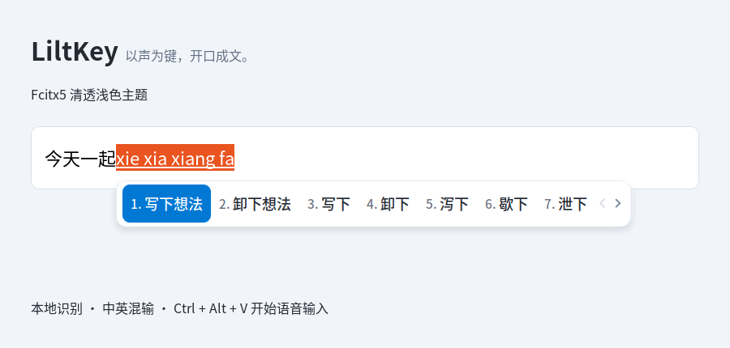

你的声音，
留在你的电脑里。
语音在本机 CPU 上识别，不上传录音，不保存语音或识别文本日志。模型和依赖准备好后，听写无需联网。
本地识别 · 无需独立显卡
YOUR VOICE, YOUR KEYBOARD.
给 Linux 一个更自然的输入方式。
说出想法，文字随之出现。识别在本机完成。
为 Fcitx5 打造 本地 CPU 识别 中文 & English
留一点时间，给刚刚冒出的灵感。
文字演示循环播放，可随时暂停。不会访问麦克风。
LESS TYPING. MORE THINKING.
写一句消息，记一段灵感，整理一页思路。
让表达保持原本的节奏。
语音在本机 CPU 上识别，不上传录音，不保存语音或识别文本日志。模型和依赖准备好后，听写无需联网。
默认支持中文与英文混合听写。提到 Linux、Python 或一句 English，不必切换识别语言；拼音输入照常使用。
临时文字跟随语音显示，停顿后自动补充标点、整理中英间距并提交。一段录音里可以连续说多句话，无须逐句确认。
04 / A CLEARER VIEW
白色圆角候选框、柔和阴影，蓝色高亮让当前选项一眼可见。拼音候选词与语音状态，使用同一套清透浅色主题。

ONE SHORTCUT AWAY.
就在你正在使用的文本框里。
需要应用正常接入 Fcitx5。
将光标放入文本框，按 Ctrl+Alt+V 开始录音。已有拼音预编辑时，先完成或取消拼音。
临时文字会随上下文调整，停顿后正式写入。一次录音最多 30 秒，期间可以提交多句话。
再次按 Ctrl+Alt+V 结束并提交尾句。按 Esc 可放弃尚未提交的内容，已写入的句子保留。
MAKE ROOM FOR YOUR VOICE.
安装包 0.3.0-3 · 安装后自动配置。
Ubuntu 26.04 · amd64（x86-64）
需要 Fcitx5 5.1.19 或更新版本。
下载 .deb，用软件中心打开并安装。已内置清透浅色主题，首次配置默认启用；已有自定义主题与深色偏好会保留。运行环境、模型和语音服务会自动准备。
安装前请先完成正在输入的内容。安装会将默认输入法设为 Fcitx5 并重启，保留已有拼音和语音配置。
保持联网，自动下载约 260 MiB 模型并安装所需依赖。收到“语音输入已就绪”通知后，注销并重新登录。
在接入 Fcitx5 的文本框中，按 Ctrl + Alt + V，即可开始说话。
在安装包所在的下载目录打开终端，运行：
sudo apt install ./fcitx5-voice_0.3.0-3_amd64.deb其他系统或 ARM 设备请参考 源码安装指南 并自行验证。LiltKey 是产品名称；命令和配置目录沿用 fcitx5-voice。
GOOD TO KNOW.
应用的文本框需要正常接入 Fcitx5。支持客户端预编辑时，临时文字显示在光标处；不支持时会回退到输入法面板。当前目标为 Ubuntu 26.04、Fcitx5 5.1.19，其他环境需要重新编译和验证。并非所有桌面应用都已完成真实麦克风验收。
安装会自动将默认输入法配置为 Fcitx5 并重启，已有拼音和语音配置会保留。安装前请先完成或取消正在编辑的拼音；就绪后注销重新登录。使用时，普通键盘输入、切换窗口或输入框会取消当前语音会话；密码和标记为敏感的文本框禁用语音输入。
首次配置会将 Fcitx5 的默认浅色主题切换为 LiltKey 清透浅色。已有自定义主题、默认深色主题、跟随系统深色的偏好，以及非默认字体和候选词排列方式都会保留；升级也不会覆盖后来的选择。可在“Fcitx 5 配置 → 附加组件 → 经典用户界面”中手动切换。截图来自真实 Fcitx5 的拼音候选框；Kimpanel 和部分应用自行绘制的面板不使用这套主题。
安装时没有桌面会话，自动配置会在下次登录后开始。首次准备需要联网，下载失败后每 5 分钟自动重试；注销或关机后，下次登录会继续初始化。无需重新安装。可在终端运行 journalctl --user -u fcitx5-voice-setup -n 50 查看进度与错误，更多方法见 安装与故障排查。
识别质量取决于录音、内容与模型，当前尚未使用用户真实口述数据集完成准确率验收。标点也可能判断不准，只处理当前分句，不会回改已经提交的正文。重要内容建议检查后再发送。
可以切换到保留的 SenseVoice 离线预览模式，录音结束后用 Enter 提交、Backspace 删除预览末字。该模式与默认流式模式不同；默认流式模式使用 Ctrl+Alt+V 停止，不用 Enter 确认。配置文件位于 ~/.config/fcitx5-voice/config.toml。
单次录音最多 30 秒。当前不提供降噪、个人热词、云端识别或自动润色。同一输入框内移动鼠标时，取消是否及时取决于应用发送的输入法事件。预训练模型遵循各自的许可证。